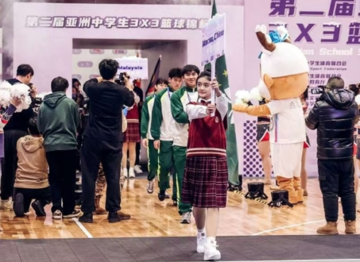
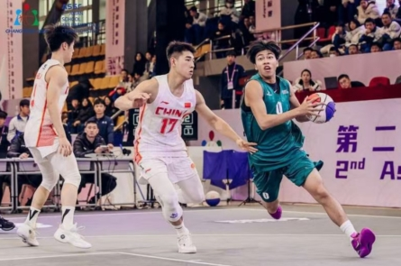
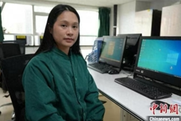
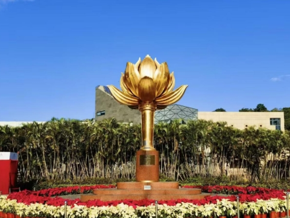

一名澳门体育教师眼中的澳门学校体育25年变化
来源：人民日报|相关链接
 
25年前的今天，澳门终于回归祖国的怀抱。在澳门回归祖国的25年时间里，当地的学校体育发展也取得了长足进步，正带队在长春参加第二届亚洲中学生3X3篮球锦标赛的中国澳门队教练、有着34年教龄的澳门圣若瑟教区中学第五校体育教师叶康成对此就有着深刻感受。
12月17日，第二届亚洲中学生3X3篮球锦标赛在吉林长春市开幕，图为中国澳门队在开幕式上。赛事组委会供图
叶康成是参加本次比赛的中国澳门队男队教练，他介绍，澳门队4名男队的运动员中有3人是第一次来到长春，孩子们亲眼看到祖国北方冰天雪地的景象后都非常兴奋。还有一名队员去年曾来过长春，因为受邀参加了CBA球队——吉林东北虎队组织的青少年篮球集训活动。叶康成说，虽然我们这次4个孩子中有3人是第一次来长春，其实他们来内地交流的机会还是比较多的，“我每年带队员来内地参加训练、比赛的次数差不多有6至8次。内地也有不少青少年运动员、教练员每年到澳门比赛和访问。澳门与内地在体育方面的交流互动，为推动澳门学校体育的发展发挥了积极作用。我觉得我的队员就在这样的交流中大大提高了篮球技术。”
12月20日，第二届亚洲中学生3X3篮球锦标赛男子四分之一决赛，中国一队与中国澳门队在比赛中。赛事组委会供图
技术的提升，也帮助学生们更好追求自己的篮球梦想。叶康成介绍，澳门学生走上职业篮球道路的可能性很低，绝大多数篮球生都希望通过篮球特长考上理想的大学。让叶康成高兴的是，目前他已有30多名学生凭借篮球特长考取了内地的大学，更让他欣慰的是，这些学生中的多数都在毕业之后回到澳门担任中小学校的体育教师，充实了澳门的体育师资。
如今，在澳门担任一名体育老师已经有了更好的工作环境和工作条件。叶康成说，这得益于澳门回归之后，中央政府和特区政府大力推进澳门的学校体育发展。叶康成回忆，34年前的1990年，自己刚刚走上工作岗位、成为一名中学体育教师的时候，当时学校体育场地狭小、器材不足、经费有限，带队员们出来参赛的机会很少。澳门回归之后，因为政府对学校体育更加重视，投入了很多资源用于提高学校体育的发展，现在学校的体育场地条件更好了，开展的体育活动更多了，孩子们也有了更多的机会外出参赛。叶康成欣喜地看到，随着学校体育工作的加强，现在澳门学生的身体素质有了改善，越来越多的学生有机会去充分发展自己在体育上的兴趣和特长。
(澳门回归25周年)“澳门女儿”“武汉媳妇”苏娃婷的双城情缘
来源：新浪新闻|相关链接

“澳门女儿”“武汉媳妇”，在作自我介绍时，苏娃婷最喜欢用这两个称呼。近日接受中新社记者采访时，这位“85后”姑娘分享了她跨越双城的成长、奋斗故事。
苏娃婷是家中独生女，自幼立志从医。2006年填写志愿时，她看中武汉丰富的教育、学术资源，报考了千里之外的武汉大学。“虽然留在澳门可以享受到家庭温暖和照顾，但是我认为年轻人应该勇于追求梦想和机遇。”她说。
2013年，硕士研究生毕业后，苏娃婷考进武汉大学人民医院麻醉科，成为该院唯一的澳门医生。11年来，她从实习医师到主治医师，再到副主任医师，不断晋升。
事业有成的同时，她与麻醉科同事、武汉小伙雷少青步入婚姻殿堂，如今育有一儿两女。
今年是澳门回归祖国25周年。“祖国是澳门繁荣稳定的坚强后盾，为澳门年轻人学习、就业、创业提供了广阔的舞台与机遇。”苏娃婷说，她有幸成为其中的亲历者、见证者、受益者。
澳门回归时，苏娃婷正在上初中，和家人通过电视直播，见证了历史时刻。她记得，当时的澳门街头张灯结彩，民众自发组织扭秧歌、打腰鼓、舞龙舞狮等庆祝活动，大街小巷洋溢着欢乐气氛。
苏娃婷表示，澳门回归后发生了许多积极变化。比如，经济得到快速发展，旅游业等产业蓬勃兴盛；社会治安得以改善，民众生活更加安全稳定；教育、社会保障等方面进步明显，为年轻人提供更多发展机会与平台。
澳门与内地往来亦日渐便利。苏娃婷告诉记者，2006年她从澳门到武汉，需要先坐大巴车到广州，再换乘卧铺火车到武汉，全程耗时约14个小时；如今，乘高铁从武汉直达珠海，再通关至澳门，全程不到7小时，“在武汉吃早餐，赶回澳门吃午餐，完全不是问题。”
“可以明显感受到，越来越多的澳门人来内地工作、学习、生活。”苏娃婷介绍说，多年来，她利用担任澳鄂大专人士协会理事、澳汉联谊会副会长等机会，推进澳门、湖北在经贸、文化、教育、青年、医疗卫生等领域交流合作。她曾为澳门企业开拓内地市场牵线搭桥，曾带领100余名宜昌学生赴澳门参观交流，也曾和澳门义工一起在湖北开展扶贫、助学、探访活动。
“澳门和武汉都是我的家，希望娘家、婆家共同发展和进步。”苏娃婷表示，未来打算继续在医学领域深耕细作，不断提升专业技能和服务水平。同时，参与和组织更多交流活动，推动澳门、武汉在更多领域、更深层次交流合作。
澳门青年与祖国同心同行（庆祝澳门回归25周年）
来源：人民日报|相关链接

“青年是澳门回归祖国25年来发展成就的亲历者、受益者，更要成为未来澳门美好生活的创造者、建设者。”站在澳门回归祖国25周年的历史节点上，澳门青年联合会会长罗奕龙满是自豪与憧憬。
1978年在澳门出生，2000年大学毕业，从事青年工作20年……罗奕龙见证了澳门回归祖国以来日新月异的变化。“25年来，澳门青年始终与祖国同心同行，拥有了空前的发展机遇，成为建设发展澳门的生力军。”罗奕龙说。
背靠祖国 舞台广阔
“25年来，‘一国两制’在澳门成功实践，取得举世瞩目的发展成就，充分证明了这一伟大构想的科学性和生命力。”罗奕龙表示，背靠祖国强大后盾，澳门在经济发展、社会治理、民生保障、文化教育等方面都取得了长足进步。澳门大桥开通、澳门协和医院开业、赴内地高科技企业实习岗位越来越多……澳门特区政府不断加大在教育、医疗、住房等民生领域的投入，澳门居民的生活水平显著提高，获得感、幸福感、安全感不断增强。“澳门与内地的交流合作日益密切，澳门居民的国家认同感和民族自豪感持续提升。”罗奕龙表示。
“25年来，澳门青年工作发展态势良好，合作更紧密、交流更广泛、沟通更顺畅、成效更彰显。”罗奕龙说。
青年团体之间的合作更紧密，在五四青年节等时间节点，澳门青年联合会167个团体会员团结协作，完成大型活动；与全国青联、各省区市青联联系日益紧密，澳区青联委员达到668名，推动成立14个交流促进会，建立常态化交流合作机制；与特区政府各个部门沟通更顺畅，广泛参与特区政府各咨询机构，使青年的意见纳入施政策略中；青年创业激情涌动，更加自信开放。“澳门青年是时代的受益者，可以在更广阔的舞台上创造更加美好的明天。”罗奕龙表示。
爱国爱澳 代代相传
爱国爱澳是澳门社会的核心价值，也是澳门青年的优良传统。
罗奕龙说，澳门回归祖国以来，澳门特区政府和社会各界高度重视对青少年的爱国主义教育，通过多种形式和渠道，引导澳门青年树立正确的国家观、历史观、民族观、文化观。
作为澳门最大的青年团体，澳门青年联合会成立于2006年9月。澳门青年联合会始终把弘扬爱国爱澳精神作为工作的重中之重。组织澳门青年参观“中国共产党的100年——庆祝中国共产党成立100周年主题图片展”，举办“学习贯彻习近平主席重要讲话座谈会”“中共二十届三中全会精神交流分享会”等……“我们及时举办各类活动，帮助澳门青年了解国家发展与重大战略部署，传承弘扬爱国爱澳精神，为‘一国两制’行稳致远贡献青春力量。”罗奕龙表示。
“以‘澳门青年两会开讲’为例，活动已成功举办15年，成为澳门青年学习贯彻落实全国两会精神的重要品牌活动之一。”罗奕龙介绍，由澳门青年联合会与多个青年团体联合举办，邀请澳区全国人大代表和全国政协委员，为青年解读两会内容和精神，每年都吸引众多青年朋友参与。近年来，还利用新媒体平台推出“聚焦两会”专栏，设立在线互动平台、网上投票等，回应青年关注的热点问题。
“爱国爱澳从来不是简单的口号，而要有扎扎实实的行动。”澳门青年联合会鼓励青年参与社会事务，组织青年志愿者参与小区服务、公益活动等，培育他们的社会责任感和奉献精神；也引导青年积极参与澳门特区政府的各项事务，为澳门的长远发展建言献策。
融入大局 成长成才
回顾20年的青年工作经历，罗奕龙服务澳门青年的思路举措日益清晰，“最重要的是帮助澳门青年认识到，要在融入和服务国家发展大局中，实现自我成长成才。”
“青联组织是澳门青年之家，要始终关注澳门青年的发展需求，帮助他们解决在学业、就业、创业、置业等方面遇到的实际困难。”罗奕龙表示，通过举办各类培训、讲座、研讨会等活动，增强他们的能力；通过带领青年开展社会实践活动，开阔眼界、增长见识、提升综合素质。
“我们与中华全国青年联合会等青年团体建立了密切的合作关系，共同举办‘青年创业创新论坛’‘青年文化交流会’等活动，为澳门青年成长发展搭建平台。”近年来，澳门青年联合会组织多批青年赴内地参观，让他们亲身感受国家的发展脉动；同时也邀请内地青年到澳门交流，增进彼此的了解和友谊。
“澳门青年正以更加开放自信的姿态，拥抱国家发展带来的机遇，把挑战化为创新的动力源。”展望未来，罗奕龙信心满怀。